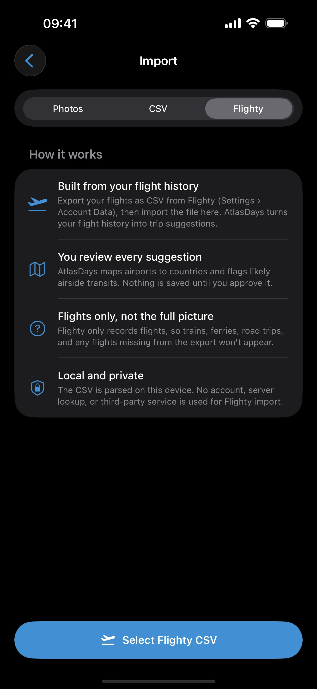

Flighty Import
Last updated: July 10, 2026
If you already track your flights in Flighty, you can turn that flight history into AtlasDays trips — with a review step before anything is saved.
What Flighty Import Does
Flighty Import is the third way to bring travel into AtlasDays, alongside Photo Import and CSV Import. It reads a CSV export of your Flighty flight history, works out which country each flight started and ended in, and groups consecutive flights into trips you can review before saving.
Like the other importers, nothing is written to your trip record until you confirm it. AtlasDays shows you a draft of every trip it inferred, with the evidence behind it, so you stay in control of what becomes part of your day count.
Flights are not the whole picture. Flighty Import covers air travel only. Ground crossings — trains, cars, ferries, walking across a land border — are not in a flight history, so you may still need to add or adjust some trips by hand afterward.
Before You Start
You need a CSV export of your flights from Flighty. In Flighty, export your flight history as CSV from Settings › Account Data, then save or share that file to your device (Files, iCloud Drive, or straight into AtlasDays). Once it is somewhere your iPhone can reach, you are ready to import.
AtlasDays reads the columns it needs from that export — origin and destination airports, dates, and times — and uses a built-in airport and airline reference to translate airport codes into countries and, for supported US airports, individual states. It does not need an internet connection to do this; the lookup happens on device.
How to Import

- Open AtlasDays and go to Import.
- Choose Flighty as the source.
- Select your Flighty CSV file from Files or wherever you saved it.
- Wait for AtlasDays to read the flights and build draft trips. Larger histories take a few seconds.
- Review the draft trips (see below), adjust anything that looks wrong, and save.
How AtlasDays Builds Trips From Flights
A trip is usually more than one flight. AtlasDays chains your flights together so that a journey out and back becomes the trips it represents, not a row-per-flight dump:
- Each flight lands you in a country. The destination airport determines where you were after that flight.
- Same-day connections are treated as transit. If you land and take off again the same day without staying, that connecting country is marked as Transit and does not add days to your count. See Does a Layover Count as Visiting a Country? for why this matters.
- A stay becomes a trip. When you remain in a country before flying onward, that becomes a trip with a start and end date.
Because the importer reasons from arrival and departure airports, the quality of the result depends on how complete your Flighty history is. Gaps in the flight history become gaps in the inferred trips.
US State Detection
When a Flighty row uses a supported United States airport, AtlasDays can resolve that airport to a US state as well as the United States country record. How that appears depends on your plan:
- AtlasDays Pro: US flight history can become per-state trip suggestions, so state-level stays can feed US State trackers and the full-screen state map.
- Free plan: AtlasDays can show that US states were found, but imported trips save as country-level United States trips. Upgrade to Pro to preserve the per-state rows.
State detection is still airport-based. If you landed in one state and drove or took a train into another, Flighty may not contain that state change. Add or adjust those state legs manually before relying on a US State tracker.
The Review Categories
Draft trips are grouped so you can scan them quickly and spend attention where it is needed:
- Ready — a clear stay in a country with confident dates. These are safe to save as-is in most cases.
- Transit — a same-day connection AtlasDays does not count as a visit. Confirm it really was airside transit if a country matters to a tracker.
- Overnight — a connection that crossed midnight. Worth a look, because whether it counts as a day in that country can depend on the rule you are tracking.
- US states — state-detected United States stays. Pro users can review and save these as state-tagged trips; free users can preview them before deciding whether to upgrade.
- Missing — flights AtlasDays could not fully place, for example an airport it could not resolve or a flight with incomplete data. These need a manual decision before they can be saved.
Editing a Draft Before Saving
Tap any draft trip to open its detail. You can see the flights and evidence behind it, change the country or US state, adjust the dates, mark or unmark it as transit, or drop it from the import entirely. This is the moment to fix anything the inference got wrong — it is much easier than correcting saved trips later.
Duplicates and Overlaps
If a Flighty trip covers the same country and dates as something already in your record, AtlasDays detects the overlap rather than creating a duplicate. Overlapping stays in the same country are merged so you do not end up double-counting days. For state-tagged US trips, the state is part of the place: different states should remain separate, while same-state overlaps should still be reviewed. If you have already added some of this travel by hand or through another import, check the overlap notes during review so the merge does what you expect.
Import once, then refine. The cleanest approach is to import your Flighty history into an empty or lightly populated record first, review it as a whole, and then add ground travel or older trips afterward. That keeps overlap handling simple.
When to Trust the Result
Flighty Import is a fast way to rebuild years of air travel, but treat the result as a strong draft, not a finished record:
- It only knows about flights that are in your Flighty export.
- It cannot see ground crossings, so a trip that ended by train or car may need its end date adjusted.
- US state results depend on airport lookup and your review; overland state changes still need manual cleanup.
- Transit and overnight calls are best-guesses from times and airports — confirm them where a country affects a visa or residency tracker.
For how trip precision affects your counts after importing, see Trip Modes and Record Quality. For rebuilding history from sources beyond flights, see How to Rebuild Your Travel History From Passport Stamps, Emails, and Photos.
Managing a Saved Flighty Import
Open Settings > Manage Imports to inspect saved Flighty batches or remove an entire mistaken import. This is useful when the source export was incomplete or wrong and you want to correct it before importing again.
Bring your flight history into AtlasDays
Import from Flighty, photos, or a spreadsheet, then track Schengen, residency, and visa days from one trusted record — private, on your iPhone.
Get AtlasDays on the App Store